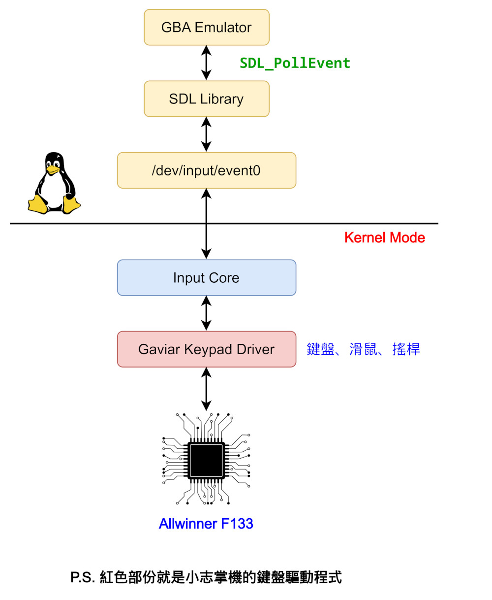
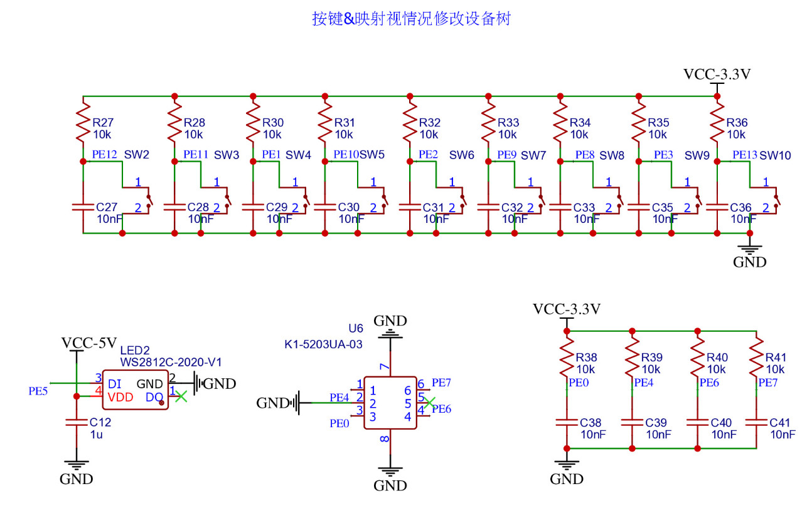
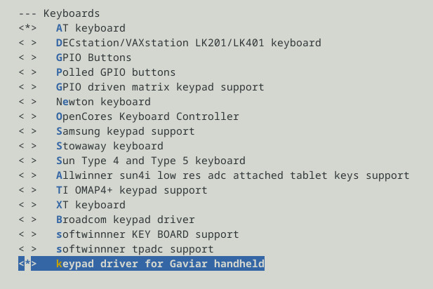
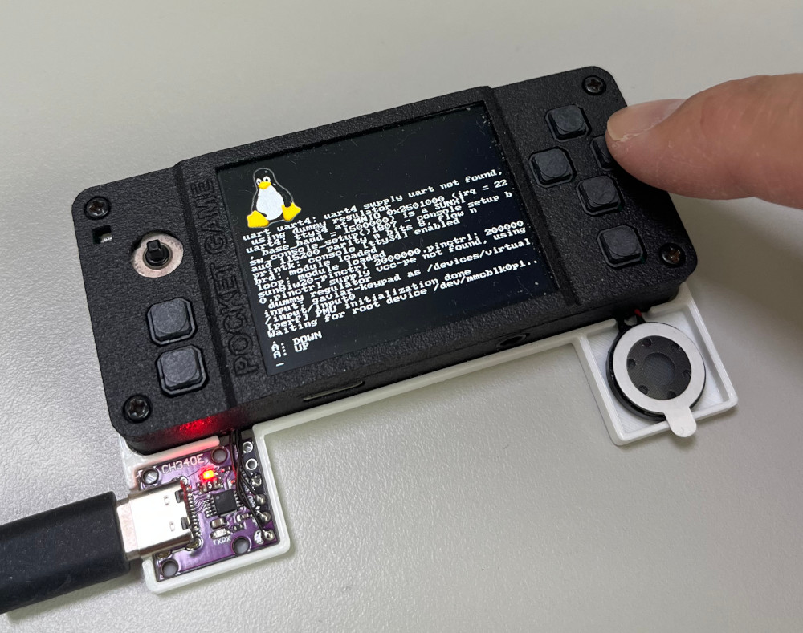
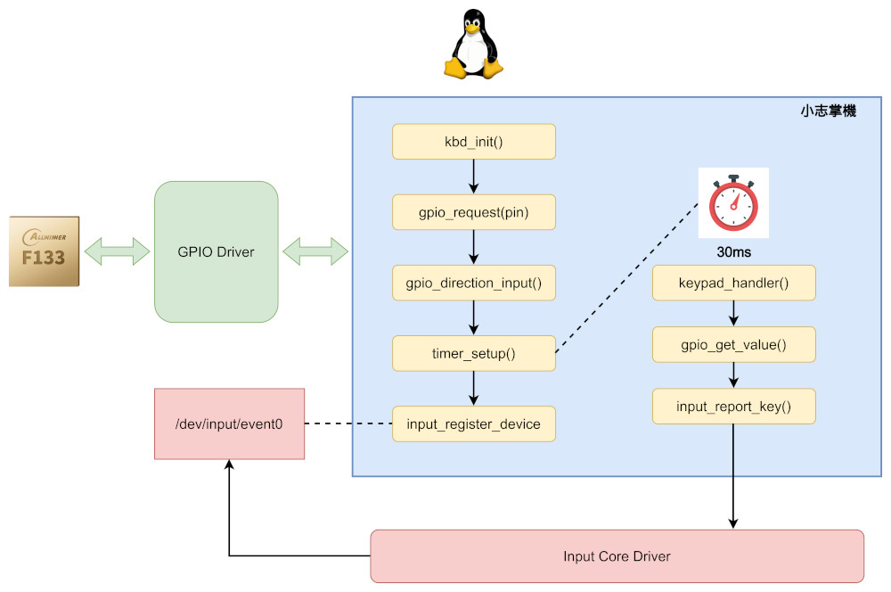
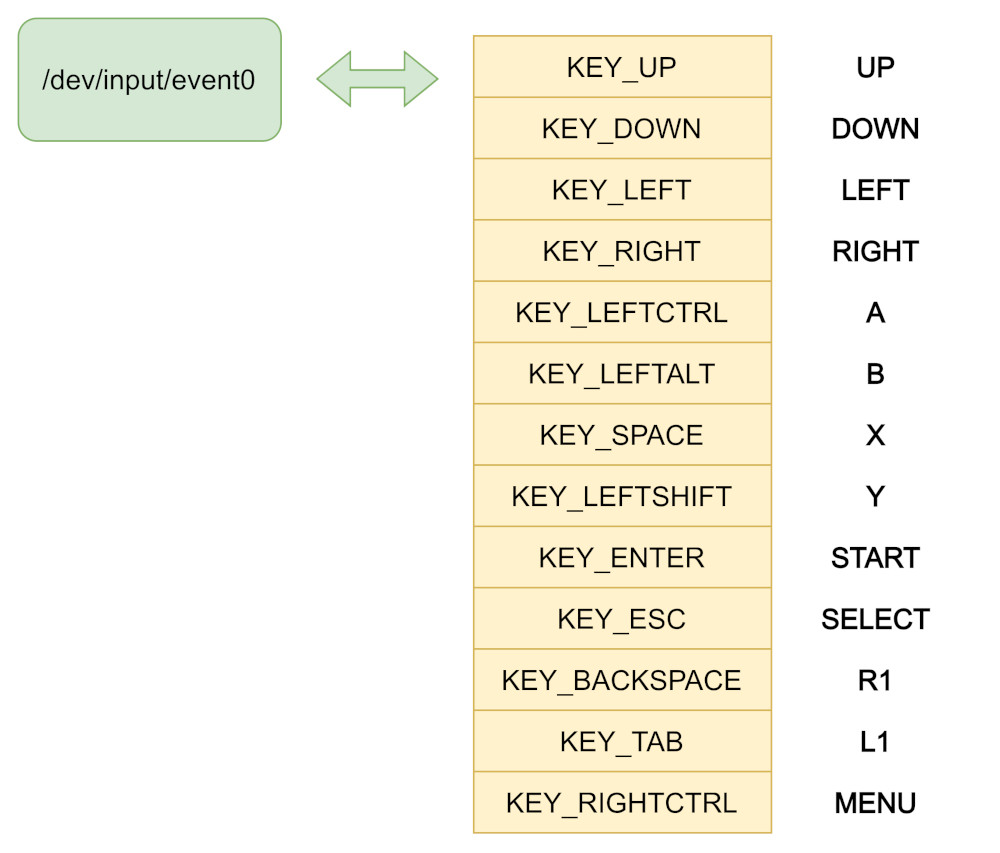

Steward
分享是一種喜悅、更是一種幸福
掌機 - Gaviar (小志掌機) - 移植Kernel keypad
司徒接著來說明一下如何做Input驅動程式的移植，Input驅動程式支援很多種類型的裝置，包含：鍵盤、滑鼠、觸控等，司徒幫小志掌機設定的類型是鍵盤，因為是比較單純的裝置，相當適合我們的小志掌機，之後要移植的模擬器就只要處理鍵盤訊息即可，這樣的架構就很單純，所以我們要實作的部份如下紅色部份

小志掌機的按鍵電路圖

PE0 => UP PE7 => DOWN PE6 => LEFT PE4 => RIGHT PE13 => A PE12 => B PE11 => X PE2 => Y PE8 => SELECT PE9 => START PE10 => R1 PE1 => L1 PE3 => MENU
drivers/input/keyboard/gaviar-keypad.c
/*
* This program is free software; you can redistribute it and/or modify
* it under the terms of the GNU General Public License as published by
* the Free Software Foundation; either version 2 of the License, or
* (at your option)any later version.
*
* This program is distributed in the hope that it will be useful,
* but WITHOUT ANY WARRANTY; without even the implied warranty of
* MERCHANTABILITY or FITNESS FOR A PARTICULAR PURPOSE. See the
* GNU General Public License for more details.
*
* You should have received a copy of the GNU General Public License
* along with this program; if not, write to the Free Software
* Foundation, Inc., 59 Temple Place, Suite 330, Boston, MA 02111-1307 USA
*/
#include <linux/fs.h>
#include <linux/kobject.h>
#include <linux/cdev.h>
#include <linux/init.h>
#include <linux/device.h>
#include <linux/module.h>
#include <linux/delay.h>
#include <linux/timer.h>
#include <linux/gpio.h>
#include <linux/input.h>
#include <linux/kernel.h>
#include <linux/slab.h>
#include <linux/uaccess.h>
#include <linux/backlight.h>
#include <sound/core.h>
#include <sound/pcm.h>
#include <sound/pcm_params.h>
#include <sound/soc.h>
#include <sound/tlv.h>
#include <sound/initval.h>
#include <sound/dmaengine_pcm.h>
#include <linux/gpio.h>
#include <asm/irq.h>
static int myperiod = 30;
static struct input_dev *mydev;
static struct timer_list mytimer;
static uint32_t R_UP = 0x0001;
static uint32_t R_DOWN = 0x0002;
static uint32_t R_LEFT = 0x0004;
static uint32_t R_RIGHT = 0x0008;
static uint32_t R_A = 0x0010;
static uint32_t R_B = 0x0020;
static uint32_t R_X = 0x0040;
static uint32_t R_Y = 0x0080;
static uint32_t R_SELECT = 0x0100;
static uint32_t R_START = 0x0200;
static uint32_t R_L1 = 0x0400;
static uint32_t R_R1 = 0x0800;
static uint32_t R_MENU = 0x1000;
static uint32_t I_UP = 0;
static uint32_t I_DOWN = 0;
static uint32_t I_LEFT = 0;
static uint32_t I_RIGHT = 0;
static uint32_t I_A = 0;
static uint32_t I_B = 0;
static uint32_t I_X = 0;
static uint32_t I_Y = 0;
static uint32_t I_SELECT = 0;
static uint32_t I_START = 0;
static uint32_t I_L1 = 0;
static uint32_t I_R1 = 0;
static uint32_t I_MENU = 0;
static int do_input_request(uint32_t pin, const char *name)
{
if (gpio_request(pin, name) < 0) {
printk("failed to request gpio: %s\n", name);
return -1;
}
gpio_direction_input(pin);
return 0;
}
static void print_key(uint32_t val, uint8_t is_pressed)
{
uint32_t i = 0;
uint32_t map_val[] = {
R_UP, R_DOWN, R_LEFT, R_RIGHT,
R_A, R_B, R_X, R_Y,
R_SELECT, R_START, R_L1, R_R1, R_MENU, -1
};
char *map_key[] = {
"UP", "DOWN", "LEFT", "RIGHT",
"A", "B", "X", "Y",
"SELECT", "START", "L1", "R1", "MENU", ""
};
for (i = 0; map_val[i] != -1; i++) {
if (map_val[i] == val) {
printk("%s: %s\n", map_key[i], is_pressed ? "DOWN" : "UP");
break;
}
}
}
static void report_key(uint32_t btn, uint32_t mask, uint8_t key)
{
static uint32_t btn_pressed = 0;
static uint32_t btn_released = 0xffff;
if(btn & mask) {
btn_released &= ~mask;
if((btn_pressed & mask) == 0) {
btn_pressed |= mask;
input_report_key(mydev, key, 1);
print_key(mask, 1);
}
}
else {
btn_pressed &= ~mask;
if((btn_released & mask) == 0) {
btn_released |= mask;
input_report_key(mydev, key, 0);
print_key(mask, 0);
}
}
}
static void keypad_handler(struct timer_list *timer)
{
uint32_t val = 0;
static uint32_t pre = 0;
if (gpio_get_value(I_UP) == 0) val |= R_UP;
if (gpio_get_value(I_DOWN) == 0) val |= R_DOWN;
if (gpio_get_value(I_LEFT) == 0) val |= R_LEFT;
if (gpio_get_value(I_RIGHT) == 0) val |= R_RIGHT;
if (gpio_get_value(I_A) == 0) val |= R_A;
if (gpio_get_value(I_B) == 0) val |= R_B;
if (gpio_get_value(I_X) == 0) val |= R_X;
if (gpio_get_value(I_Y) == 0) val |= R_Y;
if (gpio_get_value(I_L1) == 0) val |= R_L1;
if (gpio_get_value(I_R1) == 0) val |= R_R1;
if (gpio_get_value(I_SELECT) == 0) val |= R_SELECT;
if (gpio_get_value(I_START) == 0) val |= R_START;
if (gpio_get_value(I_MENU) == 0) val |= R_MENU;
if (pre != val) {
pre = val;
report_key(pre, R_UP, KEY_UP);
report_key(pre, R_DOWN, KEY_DOWN);
report_key(pre, R_LEFT, KEY_LEFT);
report_key(pre, R_RIGHT, KEY_RIGHT);
report_key(pre, R_A, KEY_LEFTCTRL);
report_key(pre, R_B, KEY_LEFTALT);
report_key(pre, R_X, KEY_SPACE);
report_key(pre, R_Y, KEY_LEFTSHIFT);
report_key(pre, R_L1, KEY_TAB);
report_key(pre, R_R1, KEY_BACKSPACE);
report_key(pre, R_SELECT, KEY_ESC);
report_key(pre, R_START, KEY_ENTER);
report_key(pre, R_MENU, KEY_RIGHTCTRL);
input_sync(mydev);
}
mod_timer(&mytimer, jiffies + msecs_to_jiffies(myperiod));
}
static int __init kbd_init(void)
{
uint32_t ret = 0;
I_UP = ((32 * 4) + 0);
I_DOWN = ((32 * 4) + 7);
I_LEFT = ((32 * 4) + 6);
I_RIGHT = ((32 * 4) + 4);
I_A = ((32 * 4) + 13);
I_B = ((32 * 4) + 12);
I_X = ((32 * 4) + 11);
I_Y = ((32 * 4) + 2);
I_SELECT = ((32 * 4) + 8);
I_START = ((32 * 4) + 9);
I_R1 = ((32 * 4) + 10);
I_L1 = ((32 * 4) + 1);
I_MENU = ((32 * 4) + 3);
do_input_request(I_MENU, "menu");
do_input_request(I_UP, "up");
do_input_request(I_DOWN, "down");
do_input_request(I_LEFT, "left");
do_input_request(I_RIGHT, "right");
do_input_request(I_A, "a");
do_input_request(I_B, "b");
do_input_request(I_X, "x");
do_input_request(I_Y, "y");
do_input_request(I_SELECT, "select");
do_input_request(I_START, "start");
do_input_request(I_L1, "l1");
do_input_request(I_R1, "r1");
mydev = input_allocate_device();
set_bit(EV_KEY, mydev-> evbit);
set_bit(KEY_UP, mydev->keybit);
set_bit(KEY_DOWN, mydev->keybit);
set_bit(KEY_LEFT, mydev->keybit);
set_bit(KEY_RIGHT, mydev->keybit);
set_bit(KEY_LEFTCTRL, mydev->keybit);
set_bit(KEY_LEFTALT, mydev->keybit);
set_bit(KEY_SPACE, mydev->keybit);
set_bit(KEY_LEFTSHIFT, mydev->keybit);
set_bit(KEY_ENTER, mydev->keybit);
set_bit(KEY_ESC, mydev->keybit);
set_bit(KEY_TAB, mydev->keybit);
set_bit(KEY_BACKSPACE, mydev->keybit);
set_bit(KEY_RIGHTCTRL, mydev->keybit);
mydev->name = "gaviar-keypad";
mydev->id.bustype = BUS_HOST;
ret = input_register_device(mydev);
timer_setup(&mytimer, keypad_handler, 0);
mod_timer(&mytimer, jiffies + msecs_to_jiffies(myperiod));
return 0;
}
static void __exit kbd_exit(void)
{
input_unregister_device(mydev);
del_timer(&mytimer);
}
module_init(kbd_init);
module_exit(kbd_exit);
MODULE_LICENSE("GPL");
MODULE_AUTHOR("Steward Fu <steward.fu@gmail.com>");
MODULE_DESCRIPTION("keypad driver for Gaviar handheld");
drivers/input/keyboard/Kconfig
config KEYBOARD_GAVIAR
tristate "keypad driver for Gaviar handheld"
help
Say Y here if you want to use keypad for Gaviar handheld.
drivers/input/keyboard/Makefile
obj-$(CONFIG_KEYBOARD_GAVIAR) += gaviar-keypad.o
選擇Gaviar Keypad

完成

P.S. commit ec03a6057，測試檔案https://github.com/steward-fu/website/releases/download/gaviar/kernel_test_20260919.img
小志掌機的Keypad驅動程式，其運作流程如下：

小志掌機的Keypad驅動程式只負責註冊InputDevice，接著設定一個Timer做GPIO輪詢的操作，輪詢的間隔是30ms，比較好的作法其實是中斷＋輪詢，不過，簡單製作的話，輪詢方式其實已經很足夠使用了，值得一提是，GPIO驅動程式，因為Tina-Linux已經移植完成，所以我們可以直接透過GPIO驅動程式來取得按鍵的狀態，假如沒有GPIO驅動程式的支援，我們就需要改用I/O Mapping，然後自己去讀取暫存器(Register)的值做處理，兩者都可以達到目的，而處理完的結果，Keypad驅動程式會透過input_report_key()回報給Input Core驅動程式，這樣上層的應用程式就可以透過讀取/dev/input/event0來取得我們回報的按鍵狀態，至於按鍵的回報，司徒採用以前丁果A320的按鍵映射方式，這些按鍵的選擇倒是沒有硬性規定，不過，根據司徒的觀察，以前這些高手的選擇都是經過細心思考且基於模擬器的相容問題來設計，像是DOSBox模擬器，加入Enter、Escape的按鍵映射，可以更加方便的操作
